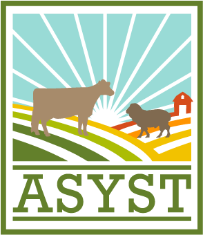

NAME
Sead Mustafa
ROLE
Full Stack Developer
sead.al1994@gmail.com
PHONE
(+90) 505 499 9108
Hello. My name is
Sead Mustafa
Over than two years experienced software developer, I have worked with Web & Enterprise applications using Java and JEE Technologies. I am now developing Cloud-Based applications with agile methodologies.
Design
Collaborating with graphic designer to improve usability
Keeping on top of new technologies

Develop
Developing CI/CD roadmap and implementing to the project
Developing application features and improvements
Clean Code
Troubleshooting and debugging applications

Promote
Participating in conferences and educational programs
Staying up to date with current best practices
Cover Letter
With a Bachelor’s degree in Computer Engineering , I have a comprehensive understanding of the full lifecycle for software development projects.
I enjoy being challenged and engaging with projects that require me to work outside my comfort and knowledge set, as continuing to learn new languages and development techniques are very important to me .
I would like to highlight some notable note :
• Highly skilled in designing, testing, developing and deploying software
• Thorough understanding of data structures and algorithms
• Knowledgeable of back-end development best practices
• Hands-on software troubleshooting experience
• Proven track record of proper documentation for future maintenance and upgrades

Professional Experience
-
May 2015 - July 2015 | Bilsoft IT- Düzce,Turkey | Software Engineer Internship SWE1
Within the studies at the Düzce University in Düzce, every student has to attend two five weeks internships within a company of his choice. Working for Bilsoft IT , gave me the chance to strengthen my experiences in the fields of desktop application development and C# programming. Here is my project that I developed in my first internship.
C#, Microsoft Visual Studio, HTML5, CSS3
2015 -
June 2016 - July 2016 | Bilsoft IT- Düzce,Turkey | Software Engineer Internship SWE2
Within the studies at the Düzce University in Düzce, every student has to attend two five weeks internships within a company of his choice. Working for Bilsoft IT , gave me the chance to strengthen my experiences in the fields of desktop application development and C# programming. Here is my project that I developed in my second internship.
C#, Microsoft Visual Studio, HTML5, CSS3, Bootstrap, Github
2016 -
Sep 2017 to Jan 2018 | INTERSAN Company – Ankara, TURKEY | Software Engineer
E-ASKI , a web application of ASKI (General Directorate of Ankara Water and Sewage Administration ) , here we developed e-Aski application to support ASKI experts ,staff and workers so that they can manage time critical information matching the latest informations , notices, payments etc . • Understanding the requirement by analyzing the web methods and design document .
• Developed and designed UI and different reports using Bootstrap, JQuery , Primefaces , CSS ,XHTML , Jasper Reports and Notepad ++ .
• Developed PL/SQL for database migration .
• Trucking the bugs and fixing them in specified time frame .
• Documenting all the functionalities of the application .
J2EE, Netbeans IDE 8.2, Oracle, SVN, JavaScript, Primefaces, Jasper Reports, XHTML, CSS3, JQuery, Bootstrap
2018 -
2018 to Current | HEMOSOFT IT & TRAINING SERVICES INC.– Ankara,TURKEY
• Designed and implemented web pages for Life Sciences’s Department projects such as ASYST (Smart Herd Management System), VIS (Veterinary Information System ), Salcon (Salmonella upgraded version ) and ADIP using Java EE ,Maven , JDBC , MS SQL , Hibernate , JS Cream Framework , Jasper Reports etc .
• Designed and developed UI for web-based applications including drag and drop datatables using Primefaces and jQuery .
• Deplyoing & testing the applications on Glassfish Server.
• Research in bioinformatics algorithms and techniques .
• Documenting all the functionalities of the applications .
J2EE, REST API, Docker, Hibernate, Gitlab, Jira, Azure, MSSQL Server, Netbeans IDE 8.2, Glassfish Server, XHTML, JavaScript, Primefaces, Bootstrap, Jasper Reports, CSS3
2018 -
2018
Skills
Software Development
Web Development
System & Networking
IT Methodologies
Personal Qualities
Languages
Get in touch